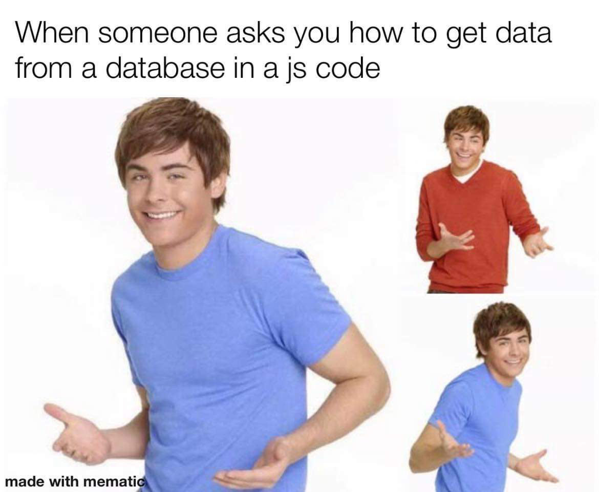
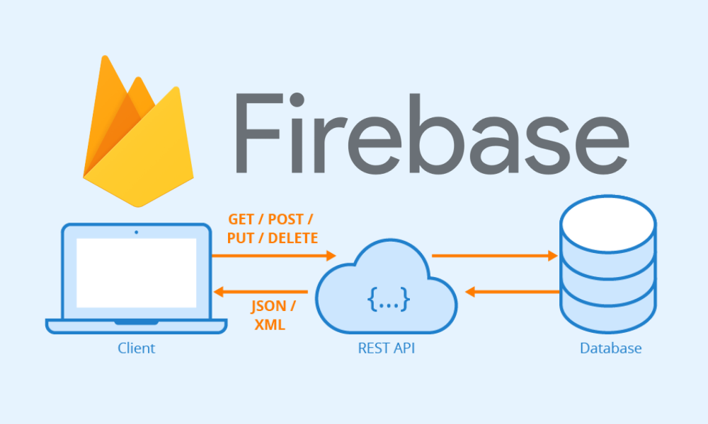
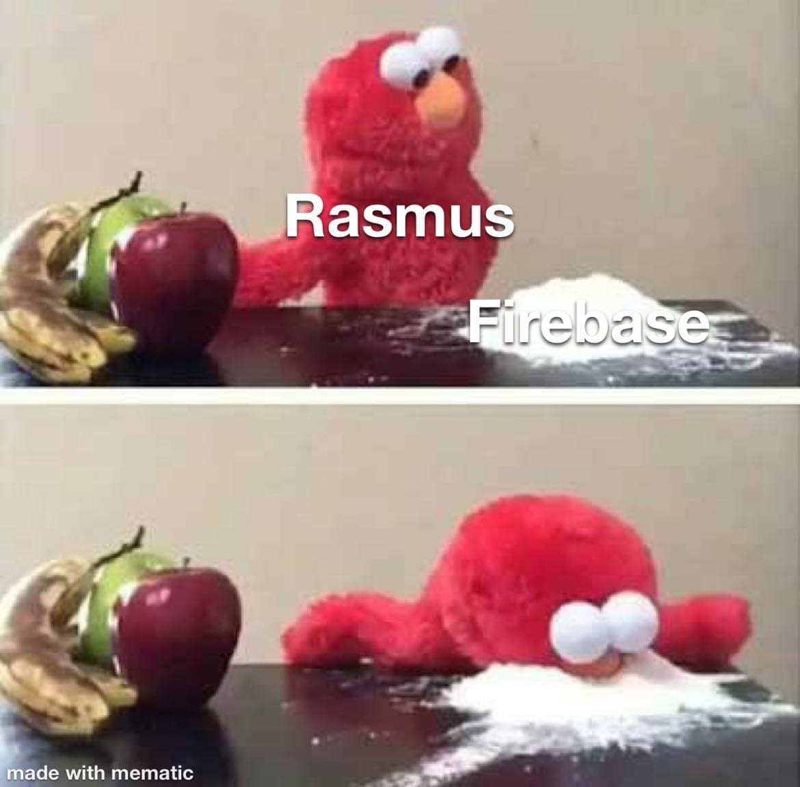
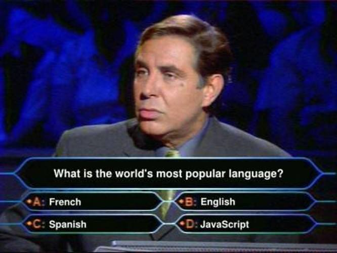
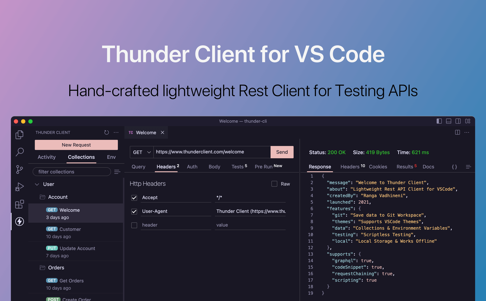
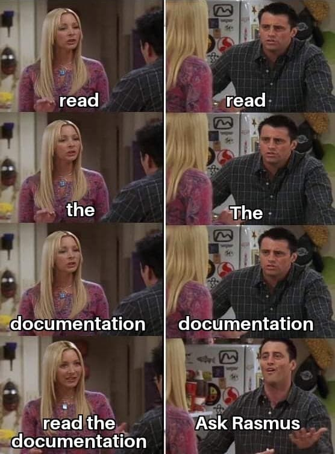

WU-E26A · RACE 1 · 28. august 2026
JavaScript
JavaScript
på serveren
Client/server · HTTP · Node.js · Express.js

Når dagen er slut, kan I bygge og forklare en lille Node-server
Fra browserens request til jeres egen server
Kan jeres maskine være med?
node --versiongiver et versionsnummer
npm --versiongiver et versionsnummer
Ikke helt klar? Åbn Dev Setup Guide ↗ — eller sig til nu.
Fra en JavaScript-fil til routes i Express
npm start
GET /users → JSON
GET /todos → JSON
Først bygger I /users og /posts. I Express bygger I videre med et /todos-API.
Lidt om RACE
Min baggrund bevæger sig gennem uddannelse, udvikling og undervisning — og på tværs af backend og frontend.
2011DatamatikerEAAA
2013App DeveloperVisiolink
2013Webudvikling (PBA)EAAA
2014Freelance Web App DeveloperCederdorff
2015Master of Science in ITSDU
2018UnderviserEAAA
2021LektorEAAA
2022–2023LektorKEA → EAAA
BackendFrontend
Lektor & Web App Developer
Rasmus Vase Cederdorff
Jeg underviser og bygger webapps med JavaScript i centrum.
I speak JavaScript
- Bygger websites, webshops, webapps og server-apps
- Arbejder på tværs af React, Node.js og BaaS-løsninger
- Holder altid UI og UX i fokus
Når jeg ikke koder
- Bor i vores Nybyggerne-hus med min mand, Matias
- Har to piger: Alicia og Ida
- Sport, gadgets, foto og indretningsprojekter
“Hvad sker der med min arm?” — spørg bare. Jeg er helt cool med det.
The cool thing about JavaScript is that you can create stuff that will put a smile on your face, as a developer.
Lex FridmanComputer Scientist
Det kan se ud som noget. Det kan gøre noget. Og det er ret fedt.

Det virkede næsten som ét JavaScript-kald. I dag åbner vi boksen og ser, hvad der faktisk ligger imellem app og data.


Men hvorfor gør I det her ved os?
Reality check
JavaScript stopper ikke ved frontend — og backend kræver mere end ét værktøj.
JavaScript på begge sider
Hvad er verdens mest populære sprog?
Plot twist: I kan genbruge jeres JavaScript-erfaring på serveren — men data skal stadig bo et sted.

To systemer
kommunikerer
Clienten initierer med en request. Serveren behandler og svarer med en response.
Client/server er en model for kommunikation mellem systemer
To systemer har hver sin rolle: En client initierer kommunikationen med en request. En server modtager, behandler og sender et response.
Modellen gør kommunikationen forudsigelig og fordeler ansvar: Clienten bruger data eller funktioner, som serveren stiller til rådighed.
Client og server er roller i kommunikationen — ikke bestemte slags enheder.
Clienten spørger — serveren svarer
HTTP requestGET /users
HTTP response200 OK + users som JSON
Tre lag — med tydelige teknologier og ansvar
FrontendHTML · CSS · JavaScript
HTTPrequest ↔ response
BackendNode.js runtime
REST APIExpress routes + middleware
Querieslæs ↔ gem
DataSQL senere i forløbet
I dag bygger vi server-appen og REST API’et. Databasen kommer senere.
Et API gør serverens funktioner til adresser
Request
GET · POST · PUT · DELETEResponse
status + JSON↔læser / gemmer
API’et er kontrakten mellem frontend og backend.
Firebase var også client/server — serveren var bare pakket væk
fetch() og JavaScript
request →GET · POST · PUT · DELETE← responsestatus + JSON
↔
“Men RACE… vi skrev jo ikke serveren?”Præcis. Firebase skrev og drev serverleddet. Nu bygger I selv det led med Node og Express.
Én handling bliver til én hel tur gennem systemet
- 1Brugeren gør nogetklik · formular · load
- 2Client sender requestmetode + URL + data
- 3Server finder kodenroute matcher
- 4Koden arbejderlogik + data
- 5Server sender responsestatus + headers + body
- 6Client bruger svaretopdaterer UI
↺ Næste handling starter en ny cyklus
Reglerne for request
og response
HTTP gør beskeder forståelige på tværs af clients og servere.
HTTP er protokollen for beskeder mellem client og server
Hypertext Transfer Protocol er fælles regler for, hvordan requests og responses er bygget op og forstås.
En browser, Thunder Client og en Node-server kan kommunikere, fordi de følger den samme protokol.
HTTP beskriver beskederne — appens kode bestemmer, hvad der sker.
HTTP flytter mere end HTML
HTMLCSSJavaScriptJSONbilledervideo
Browseren samler ofte én side fra mange separate requests.
Clienten fortæller, hvad den vil have
GET /users HTTP/1.1
Host: localhost:3000
Accept: application/json- Metode
- GET
- Path
- /users
- Headers
- metadata om beskeden
- Body
- ingen body i dette request
Serveren svarer med status, headers og indhold
HTTP/1.1 200 OK
Content-Type: application/json
[
{ "id": 1, "name": "Rasmus Cederdorff" }
]- Status
- 200 OK
- Headers
- hvordan svaret skal tolkes
- Body
- HTML, JSON, tekst eller andet
Statuskoden er serverens korte konklusion
Find requesten i Network-panelet
- Åbn en webside og DevTools → Network
- Genindlæs siden
- Vælg dokument-requesten
- Find metode, URL, status og Content-Type
Fortæl din sidemakkerHvad bad browseren om — og hvad fik den tilbage?
I HAVE NO IDEA
WHAT I’M DOING
… endnu.
JavaScript uden
for browseren
Node.js er et miljø, der kører JavaScript uden for browseren
Et JavaScript runtime environment bygget på V8 med API’er til fx filer, netværk og processer.
Vi kan bruge JavaScript til servere, værktøjer og scripts — og modtage HTTP-requests.
Node.js er hverken et nyt sprog eller et framework.
JavaScript får forskellige superkræfter
| Browser | Node.js |
|---|---|
document og DOM |
process og operativsystem |
| events fra UI | events fra netværk og filer |
| Web APIs | Node standardbibliotek |
| sandbox hos brugeren | kører på computer/server |
Første program: gem, kør, se output
// server.js
const course = "Webudvikling";
console.log(`Hej ${course}!`);$ node server.js
Hej Webudvikling!Ingen HTML. Ingen browser. Kun JavaScript og et runtime.
Del kode op — og importér det, I har brug for
// math.js
export function add(a, b) {
return a + b;
}// server.js
import { add } from "./math.js";
console.log(add(2, 3)); // 5ES modules kræver typisk "type": "module" i package.json.
Node kan vente på I/O uden at sætte alt andet på pause
Start opgave→Vent på fil/netværk↘Arbejd videre↗Håndtér resultat
Det passer godt til apps med mange samtidige netværks- og databaseoperationer.
En vigtig tilladelse
Please, do not try to understand everything!
Følg requesten. Kør koden. Ændr én ting. Kør igen.

npm forbinder projektet med JavaScript-økosystemet
npm install og scripts
Fire ting I skal kunne genkende
my-server/
├── node_modules/ # installerede pakker
├── public/ # statiske filer
├── server.js # vores serverkode
├── package.json # scripts + dependencies
└── package-lock.json # låste versionerCommit: kode, package.json og lockfil
Ignorér: node_modules/
Genskab: npm install
CODEEVERYDAY🤷🏼♂️
Den irriterende hemmelighed: Man lærer at kode ved at kode.
Hello Node.js
- Opret en ny projektmappe
- Kør
npm init -y - Tilføj
"type": "module" - Opret
server.jsog kør den med Node
Node kan selv
være webserveren
node:http giver os de grundlæggende værktøjer — uden framework.
node:http forbinder vores JavaScript med HTTP
Hvad? Nodes indbyggede modul til HTTP-servere. Hvorfor? Det lader os modtage requests og bygge responses uden ekstra pakker.
import { createServer } from "node:http";
const server = createServer((request, response) => {
response.statusCode = 200;
response.setHeader("Content-Type", "text/plain; charset=utf-8");
response.end("Hej fra Node.js!");
});
server.listen(3000, () => {
console.log("Serveren kører på http://localhost:3000");
});Hvad bad clienten om?
console.log(request.method); // "GET"
console.log(request.url); // "/users"
console.log(request.headers); // { ... }
Hvilken metode?Hvilken URL?Hvilke headers?Er der en body?
Hvordan skal serveren svare?
response.statusCode = 200;
response.setHeader("Content-Type", "application/json");
response.end(JSON.stringify({ message: "Hej" }));
Hvilken status?Hvilken content type?Hvilken body?Hvornår afsluttes svaret?
Uden framework matcher vi selv metode og URL
if (request.method === "GET" && request.url === "/") {
response.end("Forside");
} else if (request.method === "GET" && request.url === "/users") {
response.end(JSON.stringify(users));
} else {
response.statusCode = 404;
response.end("Ikke fundet");
}Det virker — men bliver hurtigt svært at læse og udvide.
Hello HTTP Module
- Start en server på port 3000
- Send tekst fra
/ - Returnér JSON fra
/users - Byg selv
/postsog en 404
API-client i VS Code
Thunder Client tester API’et dér, hvor vi skriver koden
- vælg HTTP-metode
- skriv URL
- send headers og JSON-body
- inspicér status og response

Organisér serverens
request-flow
Express lægger routing og middleware oven på Node.js.
Express er et tyndt framework oven på Node.js
Hvad? Et routing- og middleware-framework. Hvorfor? Det organiserer request-flowet og fjerner gentaget kode.
if (request.method === "GET" &&
request.url === "/todos") {
response.end(JSON.stringify(todos));
}server.get("/todos", (request, response) => {
response.json(todos);
});Installér Express som dependency
mkdir hello-express
cd hello-express
npm init -y
npm install express{
"type": "module",
"scripts": {
"start": "node --watch server.js"
}
}node --watch genstarter processen, når filerne ændres.
Fem linjer etablerer serverens grundform
import express from "express";
const server = express();
server.get("/", (request, response) => {
response.send("Hello Express.js 🎉");
});
server.listen(3333, () => {
console.log("Serveren kører på http://localhost:3333");
});Express gør cyklussen konkret i koden
GET /todos→server.get("/todos", handler)→response.json(todos)
Men RACE…
Hvordan ved du alt det?
Plot twist: Jeg slår også ting op.

En route kobler en request til den kode, der skal køre
Hvad? Metode + path + handler. Hvorfor? Serveren skal kunne vælge forskellig adfærd for forskellige requests.
GET+/todos+handler=route
server.get("/todos", (request, response) => {
response.json(todos);
});Forskellige URLs kan give forskellige svar
GET /forsideGET /testtest HTTP-metodenGET /todosalle todos som JSONserver.get("/todos", (request, response) => {
response.status(200).json(todos);
});Path params og query params løser forskellige opgaver
/todos/3request.params.todoIdidentificér en bestemt todo
/todos?completed=truerequest.query.completedfiltrér resultatet
server.get("/todos/:todoId", (request, response) => {
const todoId = Number(request.params.todoId);
// find og returnér den valgte todo
});Middleware gør request-body tilgængelig som JavaScript
server.use(express.json());
server.post("/todos", (request, response) => {
const newTodo = {
id: todos.length + 1,
...request.body
};
todos.push(newTodo);
response.status(201).json(newTodo);
});
express.json() skal registreres før routes, der bruger request.body.
Middleware er funktioner på requestens vej
Hvad? Kode, der kører før eller mellem routes. Hvorfor? Fælles opgaver som logging og JSON-parsing kan genbruges.
request→logging→JSON parsing→route handler→response
server.use((request, response, next) => {
console.log(request.method, request.url);
next();
});Middleware skal sende et response eller kalde next().
Express kan servere HTML, CSS, JavaScript og billeder direkte
server.use(express.static("public"));public/
├── index.html
├── styles.css
├── app.js
└── images/
└── logo.svgpublic er filesystem-mappen — men er ikke en del af URL’en.
Hvis intet matcher, skal serveren stadig svare
server.use((request, response) => {
response.status(404).json({
error: "Route not found"
});
});
Placér den sidstExpress gennemgår middleware og routes i den rækkefølge, de registreres.
Getting Started with Express.js
- Installér Express og start serveren
- Test HTTP-metoder på
/test - Returnér todos fra
GET /todos - Byg
POST /todosmed JSON-body
Gør jeres todos-API færdigt og forklar én request
GET /todosreturnér alle todosGET /todos/:todoIdreturnér én todoPOST /todosopret en ny todoPUT /todos/:todoIdopdatér en todoDELETE /todos/:todoIdslet en todoTest alle routes i browser eller Thunder Client. Dokumentér metode, URL, status og response.
Serveren er ikke færdig, før I kan vise dens adfærd
- Serveren starter uden fejl
- Mindst tre forskellige paths giver forskellige svar
- JSON-responses har passende statuskoder
- Ukendte routes giver 404
- En anden gruppe kan teste løsningen ud fra jeres instruktion
Materialerne følger samme progression
Kan I forklare de fem led med jeres egne ord?
client→request→route + middleware→response→client
Hvad er Node.js?
Hvad tilføjer Express?
Hvordan matches en route?
Hvorfor betyder rækkefølgen noget?
Byg én request
ad gangen
Kør · test · læs fejlen · ændr · kør igen
Og ja — der er fredagsbar i Basement efter undervisningen 🎉